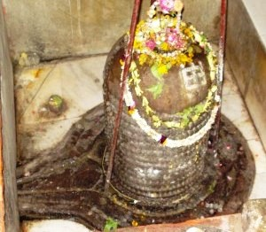

<?xml version="1.0" encoding="UTF-8"?><rss version="2.0"
	xmlns:content="http://purl.org/rss/1.0/modules/content/"
	xmlns:wfw="http://wellformedweb.org/CommentAPI/"
	xmlns:dc="http://purl.org/dc/elements/1.1/"
	xmlns:atom="http://www.w3.org/2005/Atom"
	xmlns:sy="http://purl.org/rss/1.0/modules/syndication/"
	xmlns:slash="http://purl.org/rss/1.0/modules/slash/"
	>

<channel>
	<title>Nageshwar &#8211; Varanasi Temples</title>
	<atom:link href="index.html" rel="self" type="application/rss+xml" />
	<link>../../../../../index.html</link>
	<description>Temples of Varanasi as referred to in Kashi Khand</description>
	<lastBuildDate>Thu, 19 Jun 2025 05:16:46 +0000</lastBuildDate>
	<language>en-US</language>
	<sy:updatePeriod>hourly</sy:updatePeriod>
	<sy:updateFrequency>1</sy:updateFrequency>
	<generator>https://wordpress.org/?v=4.6.29</generator>
	<item>
		<title>NAGESHWAR</title>
		<link>../../../../../shiva-temples/nageshwar/index.html</link>
		<pubDate>Mon, 10 May 2010 15:27:08 +0000</pubDate>
		<dc:creator><![CDATA[admin]]></dc:creator>
				<category><![CDATA[Nageshwar]]></category>
		<category><![CDATA[Other Shiva Temples (L-R)]]></category>
		<category><![CDATA[Shiva Temples]]></category>
		<category><![CDATA[jyotirling]]></category>
		<category><![CDATA[nag]]></category>
		<category><![CDATA[nagaeshwar]]></category>
		<category><![CDATA[nageshwar]]></category>
		<category><![CDATA[nageswar]]></category>
		<category><![CDATA[sankata devi]]></category>
		<category><![CDATA[shiva of nageshwar]]></category>

		<guid isPermaLink="false">../../../../../p=424.html</guid>
		<description><![CDATA[Kashi Khand, Chapter 100 has prescribed some Yatras (Religious tours) and one of the important ones is the Antargrihi Yatra. Among the deities to be worshipped is Nageshwar which is considered to be an important Shiv Ling. (NAGESHWAR) Nageshwar is one of the twelve Jyotirlings.  On all India basis, there are two temples which are [&#8230;]]]></description>
				<content:encoded><![CDATA[<p>Kashi Khand, Chapter 100 has prescribed some Yatras (Religious tours) and one of the important ones is the Antargrihi Yatra.</p>
<p>Among the deities to be worshipped is Nageshwar which is considered to be an important Shiv Ling.</p>
<p></p>
<p style="text-align: center;"><strong>(NAGESHWAR)</strong></p>
<p>Nageshwar is one of the twelve Jyotirlings.  On all India basis, there are two temples which are worshipped as Nageshwar Jyotirling.  One is in Maharashtra and the other one is near Dwarka.</p>
<p>Nageshwar temple in Varanasi is worshipped as one of the Jyotirlings.  It is believed that doing pooja and archana of Nageshwar Ling at Kashi is as beneficial as doing a similar pooja at the above two temples.  This will cleanse the devotee of all the sins committed knowingly or unknowingly.</p>
<h1>LOCATION OF THE TEMPLE</h1>
<p>The temple is located at House No. Ck.1/21, Patani Tola, Bhosala  Ghat, Varanasi.  One can travel upto Chowk by Cycle Rickshaw and walk to this place via Sankata Devi Temple (famous landmark). Alternatively, devotees can approach the place by boat upto Bhosala Ghat and climb up the steps. There is another Shiv Ling named Nageshwar in the premises of Mrityunjay Temple and devotees worship this Ling also with all divinity.</p>
<h3></h3>
<p><strong>Please watch our YouTube Video about Nageshwar  at following Link</strong></p>
<p>&nbsp;</p>
<h3><a href="https://www.youtube.com/watch?v=nVskyJmzxGQ&amp;t=13s">https://www.youtube.com/watch?v=nVskyJmzxGQ&amp;t=13s</a></h3>
<p>&nbsp;</p>
<h3>TYPES OF POOJA</h3>
<p>The temple is open from 07.00 a.m. to 9.00 a.m. and in the evening from 07.00 p.m. to 08.00 p.m. Devotees can perform pooja as per their convenience within the above timings. When the temple is closed, devotees can have darshan through an opening created specially for the purpose. According to the Poojari of the temple, performing pooja etc. at this temple will remove the afflictions caused on account of Kaal Sarp Dosh in the horoscope.</p>
<h3></h3>
]]></content:encoded>
			</item>
	</channel>
</rss>
